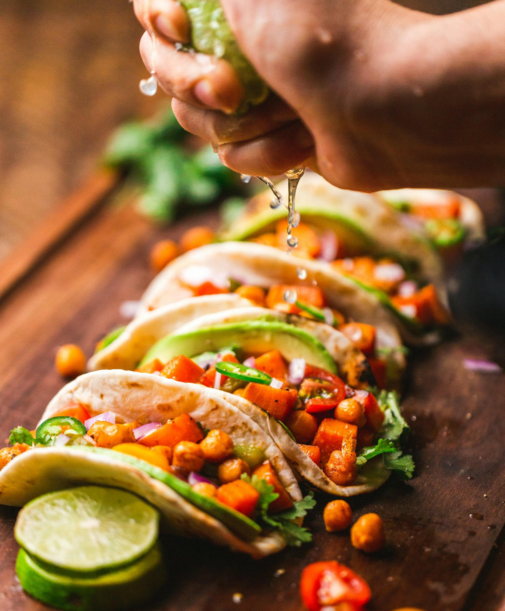
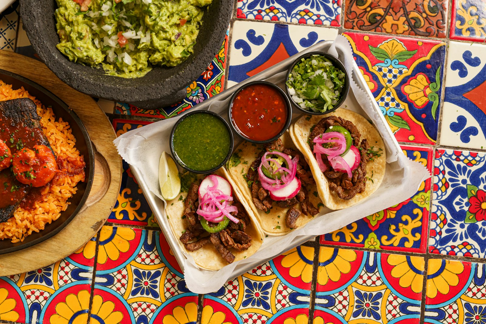
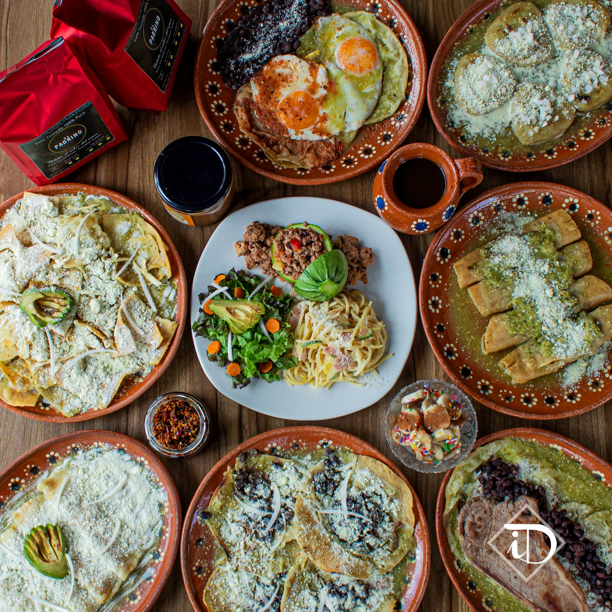

Tacos
Street-style and platter tacos with your choice of fillings.

Glassboro, New Jersey
La Patrona is a Mexican restaurant at 709 N Main St in Glassboro, rated 4.7 stars from 41 Google reviews. Call ahead to place your order.
The restaurant
Customers describe La Patrona as fairly priced. Find us at 709 N Main St in Glassboro, or call (856) 226-3824.


Services
Tacos, platters, and house favorites. Call (856) 226-3824 to confirm what's offered and current pricing.
Street-style and platter tacos with your choice of fillings.
Enchiladas, burritos, and hearty plates.
Portions meant for sharing and takeout.
Aguas frescas, chips, and the usual favorites.
From public reviews
★★★★★
“After waiting 45 minutes for takeout i understand why.... they needed to go up to the Mexican gods and request a torta lol. Every aspect of this sandwich was phenomenal idk how else to describe it..”
Google review
★★★★★
“Don’t let this aesthetics scare ya. Food is fantastic. Service with a smile. Family making a living type place. Pop in and grab a bite or take out and enjoy at home.”
Google review
★★★★★
“My wife and I wanted Mexican tonight and decided to give La Patrona 2 in Glassboro a try. When we arrived, we weren't sure it was even open . . . But it was! Soon as we were seated, red and green salsa and chips were placed.”
Google review
Visit
709 N Main St
Glassboro, NJ 08028
Hours are taken from the current Google listing and can change around holidays. Call (856) 226-3824 to confirm.
Prebuilt Site
From Warren Daisey at prebuiltsite.com
Like this site? Here's how to make it yours.
One-time
$50 one-time
A one-time fee to get this design set up as your site.
Pay $50 setupYearly
$72 per year
$60 unlimited updates by email + $12 domain, including lapatronaglassboro.com.
Pay $72 a yearOne-time
$50 one-time
A one-time fee once the site is just the way you want it.
Pay $50 once you love itQuestions or changes? Email warren@prebuiltsite.com
This preview stays up for 30 days.